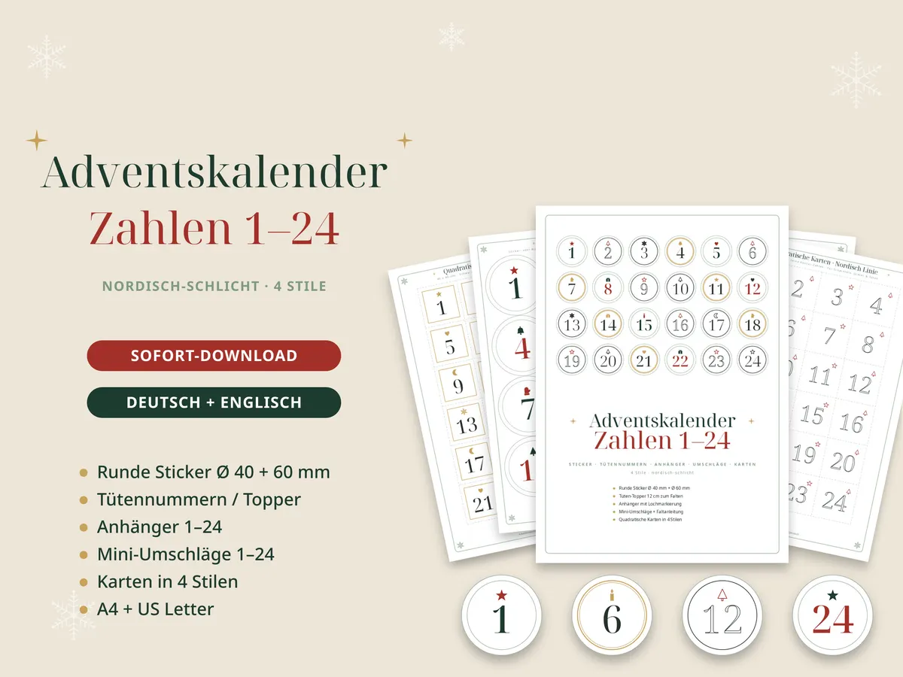

Adventskalender füllen: 24 Ideen ohne Kram (für Kinder, Familie und Paare)

Ein Adventskalender muss nicht mit Schokolade und Plastik gefüllt sein. Kleine gemeinsame Momente bleiben länger in Erinnerung – und kosten fast nichts.
8 Ideen für Kinder
- Plätzchen backen und verzieren
- Eine Taschenlampen-Wanderung im Dunkeln
- Eine Höhle aus Decken bauen und darin vorlesen
- Vogelfutter-Kränze basteln und aufhängen
- Einen Wunschzettel malen
- Schneemann bauen – oder einen aus Socken basteln
- Einen Weihnachtsfilm im Schlafanzug schauen
- Ein Bild für Oma und Opa malen und abschicken
8 Ideen für die ganze Familie
- Spieleabend mit Kakao
- Lichter-Spaziergang durch die Nachbarschaft
- Weihnachtsquiz am Abendbrottisch
- Gemeinsam ein Fotoalbum vom Jahr anschauen
- Spielzeug aussortieren und spenden
- Weihnachtskarten schreiben
- Einen Weihnachtsmarkt besuchen
- Ein Abendessen bei Kerzenlicht – ohne Handys
8 Ideen für Paare
- Glühwein auf dem Balkon
- Ein neues Rezept zusammen kochen
- Ein Brief: „Das schätze ich an dir“
- Eislaufen gehen
- Ein Puzzle zu zweit
- Frühstück im Bett
- Lieblingsfilm vom ersten Jahr anschauen
- Pläne fürs neue Jahr schmieden
So bastelst du den Kalender
- Papiertüten: 24 Tüten mit Zahlen-Toppern verschließen und an eine Schnur hängen.
- Mini-Umschläge: Für Aktivitätskarten perfekt – sie passen in jede Tasche und an jeden Zweig.
- Gläser oder Schachteln: Mit runden Zahlen-Stickern bekleben.
- Papier: Karton mit 160 bis 200 g/m² hält am längsten; für Sticker eignet sich Etikettenpapier.
Tipp: Plane die Aktivitäten passend zum Kalender. Aufwendige Ideen kommen aufs Wochenende, schnelle auf die Schultage.
Fertig zum Ausdrucken
Adventskalender Aktivitätskarten – 72 Karten
Je 24 Karten für Kinder, Familie und Paare, 12 leere Karten und Zahlen-Anhänger. Jede Karte ist markiert: Zuhause, Draußen, Kreativ oder Schenken.
Ansehen auf Etsy
Adventskalender Zahlen 1–24
Sticker, Tütennummern, Anhänger, Mini-Umschläge und Zahlenkarten in 4 Stilen – nordisch schlicht, auch tintensparend in Schwarz-Weiß.
Ansehen auf EtsyDas brauchst du noch
Werbung: Die Links führen zu Amazon (Affiliate-Links). Als Amazon-Partner verdiene ich an qualifizierten Verkäufen. Für dich ändert sich der Preis nicht.